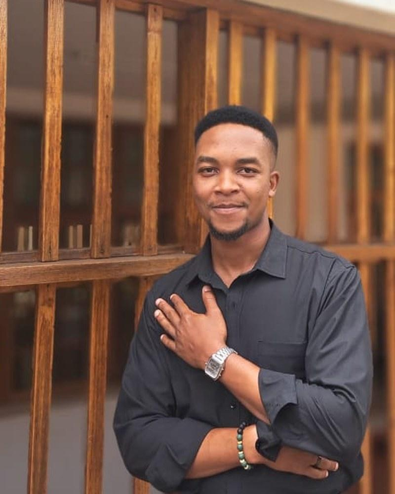

About me
Good decisions start with good data, and with listening to people first
From census interviews in 2018 to community-led projects in Karonga and business systems in Lilongwe, this is the path behind my work.

My story
Why I do this work
I've always believed that good decisions start with good data.
That belief started early. In 2018 I went house to house as a census enumerator. Then came farmer contract records at Premium Tobacco, and three years of research data at the UNC Project while I studied horticulture at LUANAR. I learned that numbers only matter when they help someone decide better.
In July 2024, I spent time as an enumerator in Chileka, going from household to household in a remote farming community. I saw how hard people worked, and how little that work gave back. Families were struggling with problems that good support could actually solve.
I kept asking myself one question: how can I help people like these?
My agriculture background gave me a starting point. So I worked hard, applied to organisations that support communities, and found my way to CorpsAfrica. There I spent a year in Simeon helping a community plan, fund and deliver its own projects. That's where I fell in love with development work, and where I learned that lasting change comes from the people themselves.
Today I bring both sides to every role. I listen to people first, and I let the evidence guide the plan. Then I track the results honestly, so every decision is backed by data.
Work history
The roles that shaped my work
Project Officer, Evolve Marketing Consultancy
Sept 2026 to nowI coordinate the Lightwell Community Empowerment Programme and Agro Link, a network that links farmers and cooperatives to markets. I also find and win new agri-business clients. When the team was running six divisions on Excel and WhatsApp, I built them a CRM and ERP system and had the first version live in two weeks.
See Evolve Business Suite →Web Manager and Developer, JK Nutritional and Herbal Clinic
July 2026 to now · part-timeI built and run the clinic's website for customers in five countries. It includes a product verification tool that lets buyers check a product is genuine before they use it.
See the JK website →Community Development Facilitator, CorpsAfrica/Malawi
Aug 2025 to Aug 2026I was placed for a year in Simeon, Karonga, where I helped the community deliver three projects worth MWK 10.8M in total. The community itself contributed 38% of that. Along the way I designed the M&E, managed donor grants and trained 14 local leaders to keep the work going.
See the three projects →Research Data Assistant, UNC Project
May 2022 to July 2025 · part-time alongside my degreeI collected, cleaned and checked research data using Kobo Toolbox and Excel, catching errors before they reached the analysis.
Data Management Assistant, Premium Tobacco Malawi
Aug 2019 to Dec 2020I kept farmer contract and production records accurate and matched to the field, and prepared the summaries management used to make decisions.
Earlier field research
I interviewed farming households in rural Chileka on their crops, livelihoods and living conditions, and checked every form for accuracy and ethics before it left the field. This was the job that drew me into development work.
I carried out household interviews for the national census using ODK, explaining the survey to families and keeping their answers confidential.
Where I'm heading
I'm building toward project management in development organisations, and in time, country director.
To get there, I've gone back to school. I'm studying Applied Business Management at BYU-Pathway, starting with a certificate in project management. The goal is simple: grow into positions where I can support more people, more communities and the organisations that serve them.
What keeps me going
Passion, and a promise I made to myself: to keep going, no matter what.
Some days the work is slow, budgets run short or plans fall apart. That promise is why I show up anyway.
Skills and tools
What I can do, and where I've done it
Project and programme
- Project planning and delivery
- Budgets and grant management
- Proposal writing and donor reporting
- MEAL and indicator tracking
- Stakeholder engagement
- Facilitation and training
- ABCD and Human-Centered Design
Used in: Chitemwano poultry, Ighembe classrooms, goat pass-on
Agile
- Scrum
- Sprint planning
- Product backlog and user stories
- Kanban boards
- Sprint reviews and retrospectives
Used in: BizSync team project (BYU-Pathway), weekly reviews on CorpsAfrica projects
Supply chain
- Supply chain mapping
- Procurement and sourcing
- Supplier management
- Inventory and stock control
- Purchase orders and reorder planning
- Logistics coordination
Used in: EBS stock and purchasing, Ighembe procurement, Agro Link
Quality management
- PDSA cycles
- Quality assurance and quality control
- Root cause analysis
- Continuous improvement
- Data quality checks
Used in: PDSA improvement project (BYU-Pathway), UNC Project data checks, pre and post training tests
Data
- Excel
- Power BI
- SQL
- Kobo Toolbox, ODK and SurveyCTO
- Google Workspace
Used in: UNC Project, Premium Tobacco, CorpsAfrica M&E
Systems and web
- HTML, CSS and JavaScript
- PHP and MySQL
- Supabase
- Git, GitHub and Netlify
- WordPress and Elementor
Used in: Evolve Business Suite, JK website, this portfolio
Languages: English and Chichewa, both fluent
Qualifications
Education and training
BSc Applied Business Management
BYU-Pathway Worldwide, starting with a Project Management Certificate
BSc Horticulture
Lilongwe University of Agriculture and Natural Resources (LUANAR)
Certificates
Aspire Institute
CorpsAfrica/Malawi
LUANAR
University of North Carolina at Chapel Hill